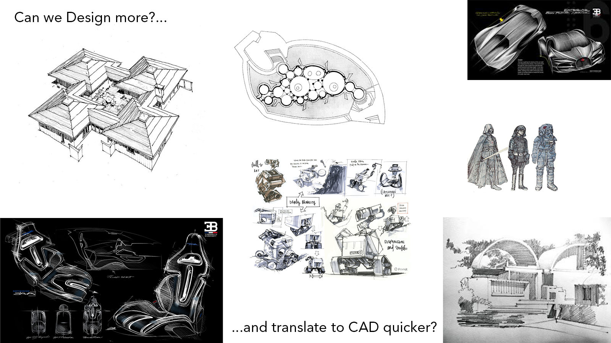
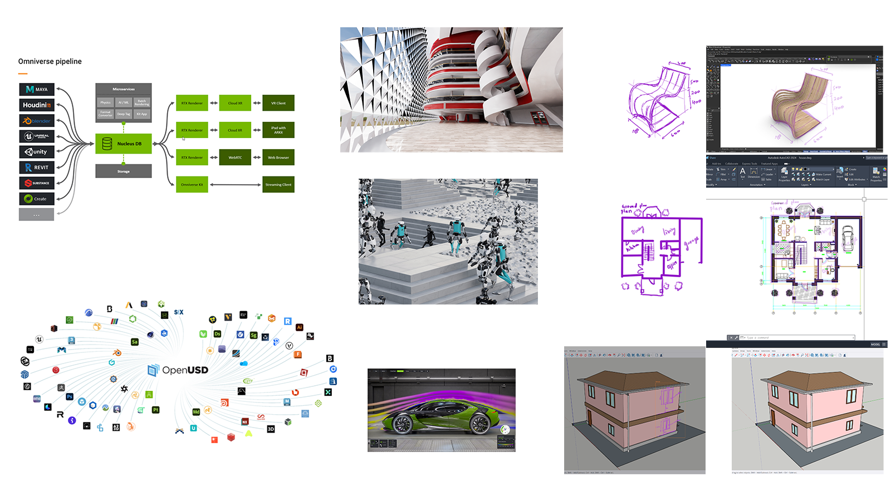

The aim of my project is to explore and prototype a sketch-based interface for CAD that allows designers to interact with CAD software through drawing.

From my experience in architecture, a lot of time goes into translating design sketches into CAD. If we can speed up this technical step, we can dedicate more time to the artistic aspects of design—exploring ideas, making creative decisions, and refining our work through iteration.
Tools that explore drawing as a form of interaction
- SILK lets you sketch user interface elements by hand and makes them interactive.
- ControlNet generates detailed images by identifying lines in sketches using AI.
- RoboSketch allows you to draw in 3D space and animate the resulting skeletons.
- DrawTalking enables users to animate scenes by speaking commands linked to sketches.
Silk: Sketching Interfaces Like Krazy
RoboSketch
Stable Diffusion: ControlNet
DrawTalking

- Having a sketch-based AI interface in Omniverse would be a good option due to its connectors with nearly all design software.
- With a sketch interface, users can convey design elements and instructions far more easily and accurately than through text.
Keywords
Human-Computer Interaction, CAD, AI, Multimodal, Sketching/Drawing, Datasets, Art, Creativity
Intersecting Fields
Design, Artificial Intelligence, Visual Thinking and Communication, Computer-Aided Design (CAD), Digital Provenance, Multimodal Datasets, Human-Computer Interaction

What is the first step?
The first step for me, would be to start off with something much simpler. I am currently working on a sketch to CAD tool for Rhino, which generates simple CAD line geometry from an input hand drawn line drawing. I will gradually build on this, increasing the level of complexity of sketches as well as complexity of the geometry.
Capstone Project Idea Outline
My project idea focuses on designing a sketch-based interface for CAD software—an AI-powered agent that allows designers to draw freely and have their sketches translated into structured CAD geometry and commands. This system is intended to make digital design workflows more intuitive, flexible, and aligned with creative processes.
It may also involves designing the full system required to support such a tool—including how multimodal training datasets, inclusive of sketches and CAD models, will be created.
The project addresses the ethical aspects of AI development in design. It proposes a contributor-focused framework for dataset creation that ensures digital asset ownership, attribution, and compensation.
...